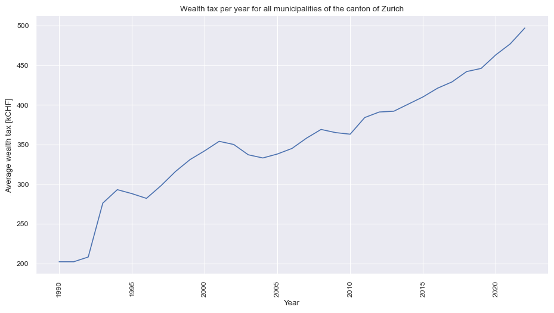

We are going to work in this post with data from the nicest and best canton of Switzerland called Zurich :) We have data from 201 municipalities during the period between 1990-2022. The data presents the mean income tax per municipality and year.
FastAPI
API Development
FastAPI
Python
SQLite
SQLAlchemy
TL;DR
We build a custom API service using public available data from the canton of Zurich in Switzerland. We share this data using FastAPI from a local database of type SQLite. We use the libraries pandas, fastapi, type-annotation, sqlalchemy and seaborn for plots.
Motivation
Did you ever dream to build your own fast API written in Python?
FastAPI is a modern, high-performance web framework for building APIs with Python. It blends the ease of use of Python with exceptional speed, making it an ideal choice for developing robust and efficient web applications.
Its automatic validation, interactive documentation, and type hints enhance developer productivity and code reliability. Whether you’re crafting a simple REST API or a complex microservices architecture, FastAPI streamlines development, promotes clean code, and optimizes performance, making it the go-to framework for those seeking both speed and simplicity in their Python web projects.
Installation
You will need to install two packages: (1) FastAPI and (2) Uvicorn. The first one is the framework itself and the second one is the server that will run the API.
Data
Switzerland’s unique tax system is characterized by its federal structure, granting significant fiscal autonomy to its municipalities and cantons. The country’s taxation policies are designed to maintain a balanced distribution of responsibilities and resources between the federal government, cantonal governments, and local municipalities. This results in a decentralized tax framework where both cantons and municipalities possess substantial authority over taxation, allowing them to tailor policies according to their specific needs and preferences.
This system encourages competition among cantons and municipalities while also fostering a sense of local ownership and control over financial matters. As a result, Switzerland’s tax landscape is complex, diverse, and reflective of the nation’s commitment to decentralized governance.

Figure 1 shows for each municipality the average paid income tax per person per year. It can be observed that the spread between the municipalities seems to increasing. Since the focus of this article is in creating a custom API service we continue without futher analysis.
Database
In our process, the initial step involves storing the data within a database, a crucial endeavor that lays the foundation for simulating a dynamic production environment. What adds an extra layer of versatility and efficiency to our approach is our utilization of sqlalchemy. This remarkable tool empowers us to seamlessly alter the connection string, enabling us to effortlessly establish connections across a diverse array of database types. This fusion of careful data handling and technological prowess harmonizes to create a truly agile and adaptable simulation framework.
Show the code
import statsmodels.api as sm
from sqlalchemy import (
create_engine, MetaData, Table,
Column, Integer, String
)
# Create a connection to the database
engine = create_engine(
## Path to database
'sqlite:///../../data/FastAPI.db',
)
## Create a table in new database
df.to_sql(
name = 'fastapi',
con = engine,
if_exists = 'replace',
)